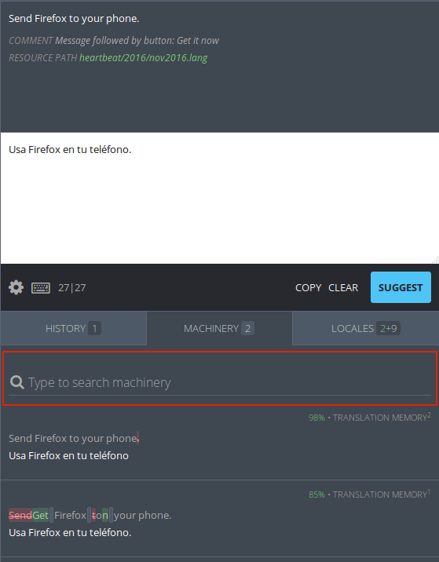

Translation resources
Pontoon features built-in access to different translation memories. These resources are available in the translation workspace and, for machinery, on a standalone web page.
History tab
The history tab shows all of the suggestions and translations that have been submitted for the current source string.
In the tab, the number of available entries is visible alongside the HISTORY title. The history entries are located below the tab.

On the left side, above the entry, the name of the translator is visible in gray (linking to their profile), while in green it’s displayed how long ago the entry was submitted (full date and time is available as a tooltip). Below this information, the translation or suggestion is displayed.
To the right of the entry, icons indicate the state of each element:
- The green checkmark indicates that the translation has been approved.
- If both icons are gray, translation has been suggested but not reviewed yet.
- The red cross indicates that the translation has been rejected. The entire element will look opaque.
- The trashcan, available only for rejected translations, can be used to completely delete a translation.
If there are multiple suggestions for one string, it’s possible to use the SHOW DIFF link displayed on the right side of the suggestion: it will compare the selected suggestion to the first entry, highlighting in green all added text, in red all removed text. HIDE DIFF will display the original string.
Machinery tab
The Machinery tab shows possible translations from a variety of sources. These sources include:
- Pontoon’s internal translation memory.
- Microsoft Terminology.
- Google Translate.
In the tab, the number of available entries is visible alongside the MACHINERY title.

Below the tab, there is a machinery search bar (highlighted in red). A translator can enter text into the search bar to search for any strings in the machinery resources that may be similar. The search does not need to be related to the current project string.
Above the entry, a diff view between the current source string and the source string from the machinery resource is visible. Text highlighted in red indicates text that is present in the source string but not in the machinery string, while text highlighted in green indicates the opposite (text available only in the machinery string).
To the right of the entry, the number in green shows the percent match between the machinery string and the source string. The higher the percentage, the more likely the machinery is to be useful. The machinery source is listed in gray. Upon clicking the gray text, the machinery source will be opened in a new window. The green superscript to the right indicates the number of matches for the entry in the translation memory source.
Note that when using the machinery tab, entry source string may not match the project source string and translations may not be fluent under the context of the project string. Be aware of the meaning and purpose of each string when using the machinery tab.
Stand-alone Machinery
Pontoon machinery is also available as a stand-alone web page. To access the page, use the Machinery link available in the Profile menu, or the Machinery tab in the upper navigation displayed in some pages (e.g. Teams page or Projects page).
To use the machinery, select the target locale from the dropdown menu to the right of the searchbar. Then input the English source string into the searchbar and press enter. This will display all matching machinery entries. Information is organized exactly as in the translation workspace.
Locales tab
The locales tab shows approved translations from Pontoon projects in other locales.

Next to the LOCALES title, the number of available entries is visible. The number of preferred locales is in green, all other locales are listed in gray.
To add a locale to the preferred locale list, access the user settings page.
Entries in the LOCALES tab above the green line are preferred locales. Entries below the green line are not preferred locales.
At the left of the entry, the translation for the source string in the selected locale is visible. At the right of the entry, the language name is visible in gray, while the locale code is displayed in green.
The LOCALES tab is useful for seeing what general style choices are made by other localization communities. When encountering a difficult string, a translator can reference the methods that have been used by other languages in making a stylistic decision.
Note that when using the LOCALES tab the translator should always opt for fluency in the working locale. Languages vary linguistically on many levels. The locales tab can be extremely useful, but should be used carefully, and rarely as the sole translation resource for translation.